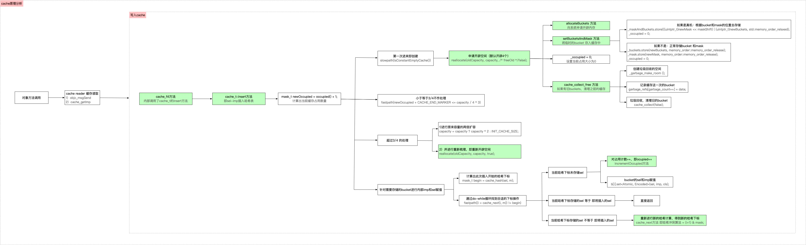
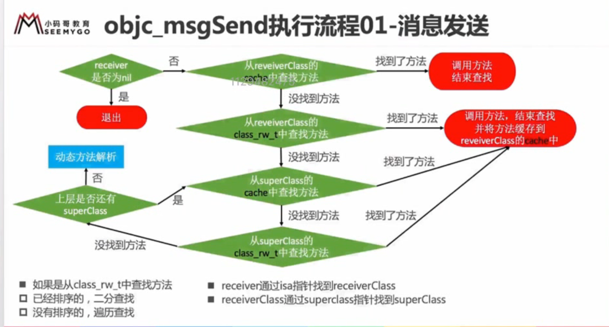
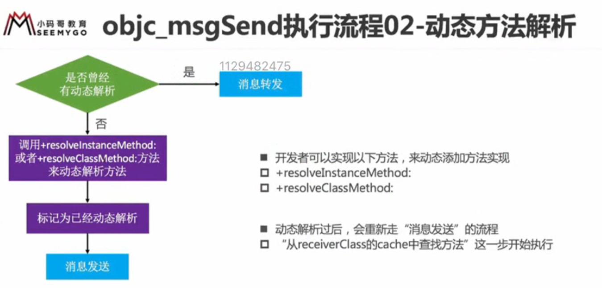
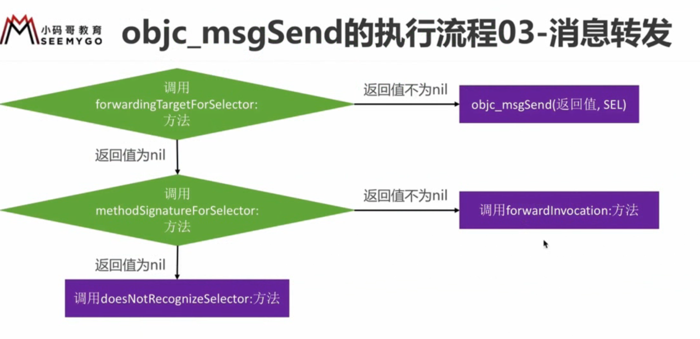
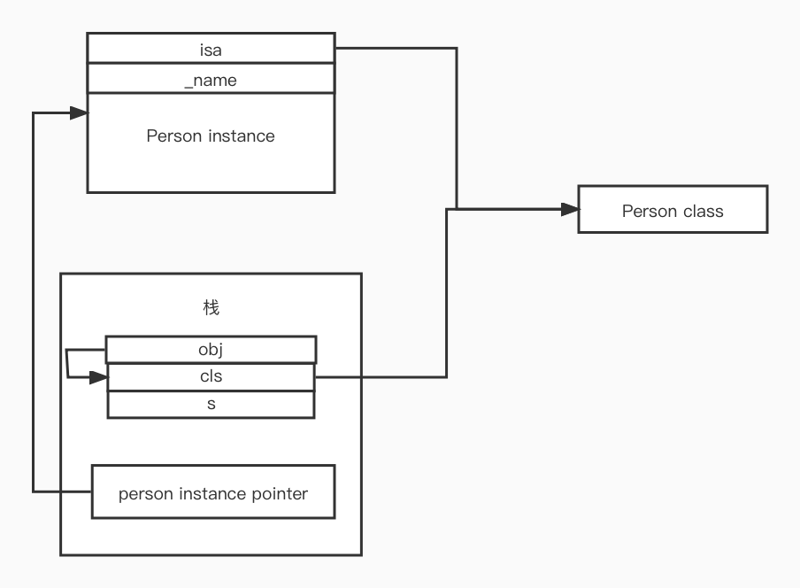

runtime
Objective-C 是一门动态性比较强的语言，跟 C，C++ 有很大不同
常规语言的过程 编写代码 -> 编译链接 -> 运行
OC 引入了 runtime 机制，运行时
Objective-C 的动态性是由 Runtime API 来支持的
Runtime API 提供的接口基本都是 C 语言的，源码由 C\C++\汇编语言编写
isa 详解
- 要学习 Runtime，首先要了解它底层的一些常用的数据结构，比如 isa 指针
- 在 arm64 架构之前，isa 就是一个普通的指针，存储这 Class、Meta-Class 对象的内存地址
- 从 arm64 架构开始，对 isa 进行了优化，变成了一个共用体（union）结构，还使用位域来存储更多的信息
runtime 中 object 的结构
struct objc_object {
private:
isa_t isa;
}
union isa_t {
isa_t() { }
isa_t(uintptr_t value) : bits(value) { }
uintptr_t bits;
private:
// Accessing the class requires custom ptrauth operations, so
// force clients to go through setClass/getClass by making this
// private.
Class cls;
public:
#if defined(ISA_BITFIELD)
struct {
ISA_BITFIELD; // defined in isa.h
};
bool isDeallocating() {
return extra_rc == 0 && has_sidetable_rc == 0;
}
void setDeallocating() {
extra_rc = 0;
has_sidetable_rc = 0;
}
#endif
void setClass(Class cls, objc_object *obj);
Class getClass(bool authenticated);
Class getDecodedClass(bool authenticated);
};
# if __arm64__
// ARM64 simulators have a larger address space, so use the ARM64e
// scheme even when simulators build for ARM64-not-e.
# if __has_feature(ptrauth_calls) || TARGET_OS_SIMULATOR
# define ISA_MASK 0x007ffffffffffff8ULL
# define ISA_MAGIC_MASK 0x0000000000000001ULL
# define ISA_MAGIC_VALUE 0x0000000000000001ULL
# define ISA_HAS_CXX_DTOR_BIT 0
# define ISA_BITFIELD \
uintptr_t nonpointer : 1; \
uintptr_t has_assoc : 1; \
uintptr_t weakly_referenced : 1; \
uintptr_t shiftcls_and_sig : 52; \
uintptr_t has_sidetable_rc : 1; \
uintptr_t extra_rc : 8
# define RC_ONE (1ULL<<56)
# define RC_HALF (1ULL<<7)
# else
# define ISA_MASK 0x0000000ffffffff8ULL
# define ISA_MAGIC_MASK 0x000003f000000001ULL
# define ISA_MAGIC_VALUE 0x000001a000000001ULL
# define ISA_HAS_CXX_DTOR_BIT 1
# define ISA_BITFIELD \
uintptr_t nonpointer : 1; \
uintptr_t has_assoc : 1; \
uintptr_t has_cxx_dtor : 1; \
uintptr_t shiftcls : 33; /*MACH_VM_MAX_ADDRESS 0x1000000000*/ \
uintptr_t magic : 6; \
uintptr_t weakly_referenced : 1; \
uintptr_t unused : 1; \
uintptr_t has_sidetable_rc : 1; \
uintptr_t extra_rc : 19
# define RC_ONE (1ULL<<45)
# define RC_HALF (1ULL<<18)
# endif
# elif __x86_64__
# define ISA_MASK 0x00007ffffffffff8ULL
# define ISA_MAGIC_MASK 0x001f800000000001ULL
# define ISA_MAGIC_VALUE 0x001d800000000001ULL
# define ISA_HAS_CXX_DTOR_BIT 1
# define ISA_BITFIELD \
uintptr_t nonpointer : 1; \
uintptr_t has_assoc : 1; \
uintptr_t has_cxx_dtor : 1; \
uintptr_t shiftcls : 44; /*MACH_VM_MAX_ADDRESS 0x7fffffe00000*/ \
uintptr_t magic : 6; \
uintptr_t weakly_referenced : 1; \
uintptr_t unused : 1; \
uintptr_t has_sidetable_rc : 1; \
uintptr_t extra_rc : 8
# define RC_ONE (1ULL<<56)
# define RC_HALF (1ULL<<7)
# else
# error unknown architecture for packed isa
# endif
// SUPPORT_PACKED_ISA
#endif
位运算 &与，|或，~按位取反
位域
@interface Person()
{
// 位域，可以标明成员变量占用位数，
// 默认情况下，那么每个成员变量占用一字节，但是char 实际使用的只有一位，一字节 = 8bit
// 使用位域的话，可以直接在内存中按顺序排开，不需要每个char 都占用一个字节，可以多个 char 占用同一字节
struct {
char tall : 1 // 最右一位
char rich : 1 // 倒数第二位
char handsome : 1 // 倒数第三位
} __tallRichHandsome;
}
@end
@implement:Person
-(void) setTall:(BOOL)tall {
__tallRichHandsome.tall = tall;
}
-(BOOL) getTall {
return !!__tallRichHandsome.tall;
}
@end
共用体
#define TallMask (1<<0)
#define RichMask (1<<1)
#define HandSomeMask (1<<2)
@interface Person()
{
// 使用共用体就可以使用位运算读写
union{
// 这个是根据实际需要的字节来定义的，mask 也需要根据实际占用的空间来做相应调整
char bits;
// 只是增加可读性，在程序中只访问 bits
struct {
char tall : 1 // 最右一位
char rich : 1 // 倒数第二位
char handsome : 1 // 倒数第三位
}
} __tallRichHandsome;
}
@end
@implement:Person
-(void) setTall:(BOOL)tall {
if(tall) {
__tallRichHandsome.bits |= TallMask;
} else {
__tallRichHandsome.bits &= ~TallMask;
}
}
-(BOOL) getTall {
return !!(__tallRichHandsome.bits & TallMask);
}
@end
通过以上分析，在 ARM64 机器上，最终的 isa 长这样
union isa_t {
isa_t() { }
isa_t(uintptr_t value) : bits(value) { }
uintptr_t bits;
private:
// Accessing the class requires custom ptrauth operations, so
// force clients to go through setClass/getClass by making this
// private.
Class cls;
# define ISA_MASK 0x00007ffffffffff8ULL
struct {
// 0代表普通指针，存储着 Class、Meta-Class 对象的内存地址
// 1 代表优化过，使用位域存储更多信息
uintptr_t nonpointer : 1; \
// 是否设置过关联对象，如果没有，释放时会更快
uintptr_t has_assoc : 1; \
//是否有 C++ 的析构函数（.cxx_destruct），如果没有，释放时会更快
uintptr_t has_cxx_dtor : 1; \
// 存储着 Class, Meta-Class 对象的内存地址信息
uintptr_t shiftcls : 33; /*MACH_VM_MAX_ADDRESS 0x1000000000*/ \
// 用于在调试时分辨对象是否未完成初始化
uintptr_t magic : 6; \
// 是否有被弱引用指向过，如果没有，释放时会更快
uintptr_t weakly_referenced : 1; \
// 原来存储的是 deallocating 现在直接使用 has_sidetable_rc 和 extra_rc 来判断
uintptr_t unused : 1; \
// 引用计数器是否过大无法存储在 isa 中
// 如果为1，那么引用计数会存储在一个叫做 SideTable 的类的属性中
uintptr_t has_sidetable_rc : 1; \
// 里面存储的值是引用计数器减1
uintptr_t extra_rc : 19
};
所以在取 isa 地址的时候需要使用 isa_t.bits & ISA_MASK 由于位域最后三位被其他占用，所以通过 ISA_MASK 取出的 Class, Meta-Class 的地址后三位为0
位运算补充
OC 中许多属性或者参数也都是通过位运算来实现的 比如在传参或者设置属性的时候用 option1 | option2 | option3
typedef enum {
Option1 = 1, // 0b0001 1<<0
Option2 = 2, // 0b0010 1<<1
Opiont3 = 4, // 0b0100 1<<2
Opiont4 = 8, // 0b1000 1<<3
} Options;
[self setOptions: Options.Option1 | Options.Option2 | Options.Option3]
-(void)setOptions:(Options)options {
if (otions & Option1){
NSLog(@"包含 option1 ")
}
if(otions & Option2) {
NSLog(@"包含 option2 ")
}
......
}
Class 的结构
// isa_t 结构
union isa_t {
isa_t() { }
isa_t(uintptr_t value) : bits(value) { }
uintptr_t bits;
private:
// 通过 setClass/getClass 读写值
Class cls;
public:
#if defined(ISA_BITFIELD)
struct {
ISA_BITFIELD; // defined in isa.h
};
#endif
};
// objc_object 结构
struct objc_object {
private:
isa_t isa;
}
// objc_class 结构
struct objc_class : objc_object {
Class superclass;
cache_t cache; // formerly cache pointer and vtable
class_data_bits_t bits;
}
// class_data_bits_t 的定义
// 里面通过 bits & FAST_DATA_MASK 拿到 class_rw_t 的地址
struct class_data_bits_t {
friend objc_class;
// Values are the FAST_ flags above.
uintptr_t bits;
private:
bool getBit(uintptr_t bit) const
{
return bits & bit;
}
public:
class_rw_t* data() const {
return (class_rw_t *)(bits & FAST_DATA_MASK);
}
const class_ro_t *safe_ro() const {
class_rw_t *maybe_rw = data();
if (maybe_rw->flags & RW_REALIZED) {
// maybe_rw is rw
return maybe_rw->ro();
} else {
// maybe_rw is actually ro
return (class_ro_t *)maybe_rw;
}
}
};
// class_rw_t
// 现在的class_rw_t 跟之前的已经有很大的不同，iOS14 之前原来的 class_rw_t，存储了所有可以修改的信息
// iOS14 之后，已经优化了，把一定会被修改的放到了 class_rw_t 内
// 不是一定会被修改的内容 抽到了 class_rw_ext_t 只有用到的时候才会初始化
// 通过 explicit_atomic<uintptr_t> ro_or_rw_ext; 动态的的存储 class_ro_t 或者 class_rw_ext_t 的地址
// 如果有 class_rw_ext_t，那么会通过 class_rw_ext_t 中的 ro 来指向 class_ro_t
// 如果没有 class_rw_ext_t，class_rw_t 中的 explicit_atomic<uintptr_t> ro_or_rw_ext 会直接指向 class_ro_t
struct class_rw_t {
// Be warned that Symbolication knows the layout of this structure.
uint32_t flags;
uint16_t witness;
#if SUPPORT_INDEXED_ISA
uint16_t index;
#endif
explicit_atomic<uintptr_t> ro_or_rw_ext;
Class firstSubclass;
Class nextSiblingClass;
private:
// 实现联合保存两种不同的可区分类型的指针,将区分位保存在指针的最低位
// 比如 两种的话是 PointerUnion 最后一位来保存类型， 四种的话是 PointerUnion4 后两位来保存类型
using ro_or_rw_ext_t = objc::PointerUnion<const class_ro_t, class_rw_ext_t, PTRAUTH_STR("class_ro_t"), PTRAUTH_STR("class_rw_ext_t")>;
public:
class_rw_ext_t *extAllocIfNeeded() {
auto v = get_ro_or_rwe();
if (fastpath(v.is<class_rw_ext_t *>())) {
return v.get<class_rw_ext_t *>(&ro_or_rw_ext);
} else {
return extAlloc(v.get<const class_ro_t *>(&ro_or_rw_ext));
}
}
void set_ro_or_rwe(class_rw_ext_t *rwe, const class_ro_t *ro) {
// the release barrier is so that the class_rw_ext_t::ro initialization
// is visible to lockless readers
rwe->ro = ro;
ro_or_rw_ext_t{rwe, &ro_or_rw_ext}.storeAt(ro_or_rw_ext, memory_order_release);
}
}
// class_rw_ext_t 按需初始化，只有对其中包含的成员进行修改时才会初始化
// cls->data()->extAllocIfNeeded() 实际上就是通过 class_rw_t 中的方法来对其进行初始化，如果有则初始化完之后返回，如果没有，则初始化并返回
struct class_rw_ext_t {
DECLARE_AUTHED_PTR_TEMPLATE(class_ro_t)
class_ro_t_authed_ptr<const class_ro_t> ro;
method_array_t methods;
property_array_t properties;
protocol_array_t protocols;
char *demangledName;
uint32_t version;
};
// class_rw_ext_t 的初始化方法
// 可以看到 class_rw_ext_t 在初始化的时候将 class_ro_t 中的现有的值全部添加到了 class_rw_ext_t 中
class_rw_ext_t *
class_rw_t::extAlloc(const class_ro_t *ro, bool deepCopy)
{
runtimeLock.assertLocked();
auto rwe = objc::zalloc<class_rw_ext_t>();
rwe->version = (ro->flags & RO_META) ? 7 : 0;
method_list_t *list = ro->baseMethods();
if (list) {
if (deepCopy) list = list->duplicate();
rwe->methods.attachLists(&list, 1);
}
// See comments in objc_duplicateClass
// property lists and protocol lists historically
// have not been deep-copied
//
// This is probably wrong and ought to be fixed some day
property_list_t *proplist = ro->baseProperties;
if (proplist) {
rwe->properties.attachLists(&proplist, 1);
}
protocol_list_t *protolist = ro->baseProtocols;
if (protolist) {
rwe->protocols.attachLists(&protolist, 1);
}
// 通过 set_ro_or_rwe 将 rwe 地址赋值给 ro_or_rw_ext，class_rw_ext_t 的 ro 指向 class_rw_t
set_ro_or_rwe(rwe, ro);
return rwe;
}
// class_ro_t 打死都不会动的，不会有任何变化
struct class_ro_t {
uint32_t flags;
uint32_t instanceStart;
uint32_t instanceSize;
#ifdef __LP64__
uint32_t reserved;
#endif
union {
const uint8_t * ivarLayout;
Class nonMetaclass;
};
explicit_atomic<const char *> name;
// With ptrauth, this is signed if it points to a small list, but
// may be unsigned if it points to a big list.
void *baseMethodList;
protocol_list_t * baseProtocols;
const ivar_list_t * ivars;
const uint8_t * weakIvarLayout;
property_list_t *baseProperties;
}
通过上面的分析可以得到
objc_object 通过共用体，位域，存储了 isa 指针，通过isa_t.bits & ISA_MASK 得到 类对象地址，当然也可以通过其他 mask 获得类对象的其他信息
objc_class 继承自 objc_object，其中存储着 Class superclass，cache_t cache， class_data_bits_t bits，当然也包括从 objc_object 继承来的 isa_t isa，
其中 class_data_bits_t (也是通过位域来存储信息) 中可以通过 bits & FAST_DATA_MASK 拿到 class_rw_t 的地址，当然从外部是直接通过 class_data_bits_t->data() 来直接获取到 class_rw_t 的地址，外部并不关心你是怎么存储的，只要拿到自己需要的信息就OK
然后就是 class_rw_t，iOS14 之前，class_rw_t 几乎存储了所有能在运行时被改变的内容，尽管大部分类并不会对其作出改变，
现在 class_rw_t 仅存储了一些一定会改变的内容，而不一定需要修改的内容则放到了 class_rw_ext_t 中按需做初始化
class_rw_t中存储了 uint32_t flags;, uint16_t witness;, uint16_t index;, explicit_atomic<uintptr_t> ro_or_rw_ext;, Class firstSubclass;, Class nextSiblingClass;
explicit_atomic<uintptr_t> ro_or_rw_ext; 通过 UnionPointer 来实现存储两种不同的可区分类型的指针,将区分位保存在指针的最低位，它所存储的类型为 如果没有 class_rw_ext_t 则为 class_ro_t, 否则为 class_rw_ext_t
同时 class_rw_t 也提供了方法来初始化 class_rw_ext_t 等的一些方法
class_rw_ext_t中存储了class_ro_t_authed_ptr<const class_ro_t> ro;, method_array_t methods;, property_array_t properties;, protocol_array_t protocols;, char *demangledName;, uint32_t version; 这些信息。
如果有 class_rw_ext_t，那么则由其中的 ro 来指向 class_ro_t
class_rw_ext_t 在初始化的时候会将 class_ro_t 中的相关信息存过来一份，在 imageLoad 过程中，如果有分类就直接在 mapImages 的时候就初始化了 class_rw_ext_t，并将分类中的信息储存进来
class_ro_t 中就存储了 class 的初始信息，只读，直接去上面代码中看吧
方法 method
typedef id _Nullable (*IMP)(id _Nonnull, SEL _Nonnull, ...);
struct method_t {
SEL name; // 函数名
const char *types; // 编码 （返回值类型，参数类型）
IMP imp; // 指向函数的指针（函数地址）
}
-
IMP 代表函数的具体实现
-
typedef id _Nullable (*IMP)(id _Nonnull, SEL _Nonnull, ...);
-
SEL 代表方法\函数名，一般叫做选择器，底层结构跟
char *类似 -
- 通过 @selector 或者 sel_registerName 获得
-
- 可以通过 sel_getName 和 NSStringFromSelector 转成字符串
-
- 不同类中的相同名字的方法，所对应的方法选择器是相同的
-
- types 包含了返函数返回值、参数编码的字符串
Type Encoding
iOS 中提供了一个叫做 @encode 的指令，可以将具体类型 表示成字符串编码
// types = i24@0:8i16f20
// i 返回值int
// 24 参数总大小
// @0 id从0开始，占8字节
// :8 SEL从id结尾开始，占8字节
// i16 age 从16开始，占4字节
// f20 height 从20开始，占4字节
// 方法默认两个参数 id cmd
-(int) test:(int) age height:(float)height;
方法缓存
Class 内部结构中有个方法缓存 （cache_t），用散列表来缓存曾经调用过的方法，可以提高方法查找速度

msgSend
OC 方法调用最终会转化为 objc_msgSend 的消息机制，给方法调用者发送消息
-
objc_msgSend 的执行流程分为三大阶段
-
消息发送
- 动态方法解析
- 消息转发
- throw error (unreconized selector send to instance)
ENTRY _objc_msgSend
UNWIND _objc_msgSend, NoFrame
// p0 寄存器：receiver
cmp p0, #0 // 比较指令，比较 receiver 地址与 #0 的大小
#if SUPPORT_TAGGED_POINTERS
b.le LNilOrTagged // receiver 地址 小于等于 0，由于 taggedPointer 的最高位为 1，所以等于 1 为 taggedPointer，等于0为 nil，调用 LNilOrTagged
#else
b.eq LReturnZero // 不支持 taggedPointer，那就直接判空就可以了，因为不需要去从 taggedPointer 拿值再往下走的情况，直接调用 LReturnZero
#endif
ldr p13, [x0] // p13 = isa // 将 [x0] 中的信息读取到 p13
GetClassFromIsa_p16 p13, 1, x0 // p16 = class
LGetIsaDone:
// calls imp or objc_msgSend_uncached
CacheLookup NORMAL, _objc_msgSend, __objc_msgSend_uncached // 查找缓存
#if SUPPORT_TAGGED_POINTERS
LNilOrTagged:
b.eq LReturnZero // nil check
GetTaggedClass
b LGetIsaDone
// SUPPORT_TAGGED_POINTERS
#endif
LReturnZero:
// x0 is already zero
mov x1, #0
movi d0, #0
movi d1, #0
movi d2, #0
movi d3, #0
ret // return
END_ENTRY _objc_msgSend
CacheLookup 中就实现了从缓存中查找已经缓存方法，假如找不到就会调用到 __objc_msgSend_uncached
__objc_msgSend_uncached 又去调用了 MethodTableLookup
MethodTableLookup 继续调用 _lookUpImpOrForward
然后我们回到 C++ 中查看 lookUpImpOrForward 方法
IMP lookUpImpOrForward(id inst, SEL sel, Class cls, int behavior)
{
const IMP forward_imp = (IMP)_objc_msgForward_impcache;
IMP imp = nil;
Class curClass;
runtimeLock.assertUnlocked();
if (slowpath(!cls->isInitialized())) {
// The first message sent to a class is often +new or +alloc, or +self
// which goes through objc_opt_* or various optimized entry points.
//
// However, the class isn't realized/initialized yet at this point,
// and the optimized entry points fall down through objc_msgSend,
// which ends up here.
//
// We really want to avoid caching these, as it can cause IMP caches
// to be made with a single entry forever.
//
// Note that this check is racy as several threads might try to
// message a given class for the first time at the same time,
// in which case we might cache anyway.
behavior |= LOOKUP_NOCACHE;
}
// runtimeLock is held during isRealized and isInitialized checking
// to prevent races against concurrent realization.
// runtimeLock is held during method search to make
// method-lookup + cache-fill atomic with respect to method addition.
// Otherwise, a category could be added but ignored indefinitely because
// the cache was re-filled with the old value after the cache flush on
// behalf of the category.
runtimeLock.lock();
// We don't want people to be able to craft a binary blob that looks like
// a class but really isn't one and do a CFI attack.
//
// To make these harder we want to make sure this is a class that was
// either built into the binary or legitimately registered through
// objc_duplicateClass, objc_initializeClassPair or objc_allocateClassPair.
checkIsKnownClass(cls);
cls = realizeAndInitializeIfNeeded_locked(inst, cls, behavior & LOOKUP_INITIALIZE);
// runtimeLock may have been dropped but is now locked again
runtimeLock.assertLocked();
curClass = cls;
// The code used to lookup the class's cache again right after
// we take the lock but for the vast majority of the cases
// evidence shows this is a miss most of the time, hence a time loss.
//
// The only codepath calling into this without having performed some
// kind of cache lookup is class_getInstanceMethod().
for (unsigned attempts = unreasonableClassCount();;) {
if (curClass->cache.isConstantOptimizedCache(/* strict */true)) {
#if CONFIG_USE_PREOPT_CACHES
imp = cache_getImp(curClass, sel);
if (imp) goto done_unlock;
curClass = curClass->cache.preoptFallbackClass();
#endif
} else {
// 查找传入对象的类对象中是否有该方法，如果有，拿到 imp 直接跳转到 done
// curClass method list.
Method meth = getMethodNoSuper_nolock(curClass, sel);
if (meth) {
imp = meth->imp(false);
goto done;
}
// 如果从自己方法列表中找不到的话，就拿到 superClass，
// 如果 superClass 是空，那么就返回 forward_imp
if (slowpath((curClass = curClass->getSuperclass()) == nil)) {
// No implementation found, and method resolver didn't help.
// Use forwarding.
imp = forward_imp;
break;
}
}
// Halt if there is a cycle in the superclass chain.
if (slowpath(--attempts == 0)) {
_objc_fatal("Memory corruption in class list.");
}
// 看一下 superClass 的cache 中有没有实现，有就跳出循环继续往下走
// Superclass cache.
imp = cache_getImp(curClass, sel);
// 假如父类中返回的就是 forward_imp，那直接跳出循环继续往下走
if (slowpath(imp == forward_imp)) {
// Found a forward:: entry in a superclass.
// Stop searching, but don't cache yet; call method
// resolver for this class first.
break;
}
// 如果找到实现的话，那就跳转到 done
if (fastpath(imp)) {
// Found the method in a superclass. Cache it in this class.
goto done;
}
}
// No implementation found. Try method resolver once.
if (slowpath(behavior & LOOKUP_RESOLVER)) {
behavior ^= LOOKUP_RESOLVER;
return resolveMethod_locked(inst, sel, cls, behavior);
}
done:
if (fastpath((behavior & LOOKUP_NOCACHE) == 0)) {
#if CONFIG_USE_PREOPT_CACHES
while (cls->cache.isConstantOptimizedCache(/* strict */true)) {
cls = cls->cache.preoptFallbackClass();
}
#endif
// 将找到的 imp 添加到缓存
log_and_fill_cache(cls, imp, sel, inst, curClass);
}
done_unlock:
runtimeLock.unlock();
if (slowpath((behavior & LOOKUP_NIL) && imp == forward_imp)) {
return nil;
}
// 返回
return imp;
}
- 消息发送
-
- 消息接受者为 nil，也就是方法调用者，是直接返回，否继续
-
- 查找是否有cache, 有，直接调用并返回，没有继续往下走
-
- 查找类或者父类是否有实现，有直接调用存入缓存，并返回
-
- 都没有，那就进入动态方法解析 
- 消息动态解析
-
- 调用
resolveInstanceMethod或者resolveClassMethod, 向receiver 中添加方法并返回BOOL值（返回不做其他用途，只用来打印）
- 调用
-
- 继续上面的查找步骤，找到第一步中动态添加的实现，调用，缓存，并返回，找不到则到消息转发阶段 
- 消息转发
-
- 调用
forwardingTargetForSelector，并返回将消息转发给哪个对象，如果返回值不为nil，直接将消息发送给返回的对象去做处理，如果返回为nil继续往下走
- 调用
-
- 调用
methodSignatureForSelector方法，并返回方法签名，也就是 types，v16@0:8这个玩意儿，如果返回不为nil则跳转到第 3 步， 否则跳转到第 4 步
- 调用
-
- 调用
forwardInvocation方法，只要进入该方法，无论做什么事情都没有关系
- 调用
-
- 调用
doesNotRecognizeSelector方法，如果实现了这个方法那么就调用这个方法，如果没有实现，那么直接调用默认的实现，抛出 unrecognized selector 的错误 
- 调用
instance method
+ (BOOL) resolveInstanceMethod:(SEL)sel
- (id)forwardingTargetForSelector:(SEL)aSelector // 返回实例对象，当然如果实现了相应的类方法，那么返回类对象也是可以的
- (NSMethodSignature *)methodSignatureForSelector:(SEL)aSelector
- (void)forwardInvocation:(NSInvocation *)anInvocation
class method
+ (BOOL) resolveClassMethod:(SEL)sel
+ (id)forwardingTargetForSelector:(SEL)aSelector // 返回类对象，当然如果实现了相应的实例方法，那么返回实例对象也是可以的
+ (NSMethodSignature *)methodSignatureForSelector:(SEL)aSelector
+ (void)forwardInvocation:(NSInvocation *)anInvocation
@dynamic 是告诉编译器不用自动生成 getter 和 setter 的实现，而是到运行时在添加实现
@synthesize age=_age 告诉编译器自动生成 成员变量及 getter 和 setter 的实现，编译器已经自动处理，不需要写出来
super
一个问题引发的思考
@interface Person : NSObject
-(void) run;
@end
@implementation Person
-(void) run{
NSLog(@"Person run");
}
@end
@interface Student : Person
-(void)eat;
@end
@implementation Student
- (instancetype)init{
if(self=[super init]){
NSLog(@"[self class] %@", [self class]); // [self class] Student
NSLog(@"[self superClass] %@", [self superclass]); // [self superClass] Person
NSLog(@"[super class] %@", [super class]); // [super class] Student
NSLog(@"[super superClass] %@", [super superclass]); // [super superClass] Person
}
return self;
}
-(void)eat{
[super run];
NSLog(@"student eat");
}
@end
我们看到，在 Student 中，无论是使用 [self class]，还是 [super class]，结果都是一样的
struct __rw_objc_super {
struct objc_object *object; // 消息接收者
struct objc_object *superClass; // 消息接收者的父类
__rw_objc_super(struct objc_object *o, struct objc_object *s) : object(o), superClass(s) {}
};
// Student 转成 C++ 简化后的代码
objc_msgSend(self, sel_registerName("class"));
objc_msgSend(self, sel_registerName("superclass")));
objc_msgSendSuper(
__rw_objc_super{self, class_getSuperclass(objc_getClass("Student"))},
sel_registerName("class")
);
objc_msgSendSuper(
__rw_objc_super{self, class_getSuperclass(objc_getClass("Student"))},
sel_registerName("superclass"))
);
我们可以看到，在 objc_msgSendSuper 中会传入一个 __rw_objc_super 的结构体，包含消息接收者以及父类对象，
消息接收者仍然是该对象本身，父类对象只是告诉 runtime 从哪里开始查找方法的实现而已
而 class 方法最终调用的都是 NSObject 的 class 方法，其实现大概就是，最终返回的还是消息接收者到底是什么类型
// NSObject 中 class 及 superClass 的实现
-(Class) class {
return object_getClass(self);
}
-(Class) superclass {
return object_getSuperclass(object_getClass(self));
}
[super message] 的底层实现 1. 消息接收者仍然是子类对象 2. 只是实现要从父类开始查找
isMemberOfClass &&& isKindOfClass
+ (BOOL)isMemberOfClass:(Class)cls {
return self->ISA() == cls;
}
- (BOOL)isMemberOfClass:(Class)cls {
return [self class] == cls;
}
+ (BOOL)isKindOfClass:(Class)cls {
for (Class tcls = self->ISA(); tcls; tcls = tcls->getSuperclass()) {
if (tcls == cls) return YES;
}
return NO;
}
- (BOOL)isKindOfClass:(Class)cls {
for (Class tcls = [self class]; tcls; tcls = tcls->getSuperclass()) {
if (tcls == cls) return YES;
}
return NO;
}
isMemberOfClass 实际上是比较对象的 isa 指针所向的内容是否为要判断的类型 isKindOfClass 实际上是比较对象的 isa 指针所向的内容或者所指向内容的 superclass 是否为要判断的类型
实例对象与类对象做判断，类对象与元类对象做判断
但是一种特殊情况需要注意
坑
[Person isKindOfClass:[NSObject class]] 这个是返回 true 的，因为 Person 的元类对象在一层一层向上找 superclass 的时候，找到 NSObject 的元类对象，NSObject 元类对象的 superclass 是指向 NSObject 的类对象的，所以最终会返回 true
@interface Person : NSObject
@property(copy, nonatomic) NSString *name;
@end
@implementation Person
-(void) test {
NSLog(@"name is %@", _name);
}
@end
int main(int argc, const char * argv[]) {
@autoreleasepool {
NSString *s = @"aaa";
// NSObject *obj2 = [[NSObject alloc] init];
id cls = [Person class];
void *obj = &cls;
[(__bridge id)obj test];
}
return 0;
}

如图所示，由于在方法调用过程中，给变量分配的栈空间是连续的，并且是由低向高的，所以，main 中所分配的几个变量排列如图
obj 在最前
cls 第二
s 第三
每块内存中所存储的内容如图 obj 所在的内存中，存储着 cls 的地址 cls 所在内存中，存储着 Person 类对象的地址
obj cls [Person class] 之间的关系就像是 person变量 person实例对象 [Person class] 之间的关系
obj 就相当于person变量，指向实例对象的 isa 指针（当然 obj 指向的是 cls），但是 实例对象的 isa 指针与 cls 所指向的都是 Person 类对象，那么系统就直接将 cls 所在内存地址及接下来的一部分地址直接当做 Person 实例对象来看待
当调用 [(__bridge id)obj test]; 的时候，系统将 obj 作为接收者，发送 test 消息
obj 找到所指向内存地址拿到最前面的内容，对于 person实例对象来说就是 isa ，对于 cls 来说就是它自己，拿到其中的地址并找到类对象，查找方法并调用
由于传递的 receiver 就是一个系统认为是 person 实例对象的一个指针，当 test 中尝试打印 _name 的时候，就会尝试找到跳过 isa 地址接下来的内容，对于真正的person 实例对象，那么就是 _name 成员变量，但是对于 把 cls 地址当做 person 实例对象的系统来说，拿到的就是跳过 cls 指针接下来的内容，是啥就拿啥，如果能正常解析就打印，不能正常解析就抛出错误
- super 的调用，底层会转换为 objc_msgSendSuper2 函数的调用，接收 2 个参数
- struct objc_super2
- SEL
struct{
id receiver;
Class current_class;
}
- receiver 是消息接收者
- current_class 是 receiver 的 Class 对象
- objc_msgSendSuper2 的实现中会先通过 current_class 拿到 superclass，然后再进行方法查找
LLVM 中间代码
转为 LLVM 中间代码 clang -emit-llvm -S main.m
Runtime API
类
void scream(id self, SEL _cmd){
NSLog(@"%@ - %@", self, NSStringFromClass([self class]));
}
void classRelatedFuncs() {
Person *p = [[Person alloc] init];
NSLog(@"%@", object_getClass(p)); // 获取类对象
[p run];
// object_setClass 设置类对象，将当前实例对象的类对象设置为其他类
object_setClass(p, [Car class]);
NSLog(@"%@", object_getClass(p));
[p run];
// object_isClass 是否为类对象
NSLog(@"%d %d %d",
object_isClass(p),
object_isClass([Person class]),
object_isClass(object_getClass([Person class]))); // 0 1 1,元类对象是一个特殊的类对象
// 是否为元类
class_isMetaClass(object_getClass([Person class]));
// 动态创建类
Class children = objc_allocateClassPair([NSObject class], "Children", 0);
// 添加成员变量，可以使用 KVC 来设置获取值
// 成员变量只可以在类注册之前添加，因为 ivar list 是在 class_ro_t 中存储，已经注册就不可变
class_addIvar(children, "_hairColor", 4, 1, @encode(int));
class_addIvar(children, "_happy", 4, 1, @encode(int));
// 添加方法
// 方法可以在任何时候添加，因为 方法变化的话会动态初始化 class_rw_ext_t 中，可变
class_addMethod(children, @selector(scream), (IMP)scream, "v16@0:8");
// 注册创建的类
objc_registerClassPair(children);
id child = [[children alloc] init];
// [child run];
// [child scream];
[child performSelector:@selector(scream)];
[child setValue:@10 forKey:@"_happy"];
NSLog(@"%@ %@", children, [child valueForKey:@"_happy"]);
// 当创建的类不需要之后可以通过该方法释放
// objc_disposeClassPair(children);
}
void ivars(){
// 获取成员变量信息
Ivar var = class_getInstanceVariable([Person class], "_name");
Ivar agevar = class_getInstanceVariable([Person class], "_age");
// ivar_getName 获取 ivar 名称，ivar_getTypeEncoding 获取 types
NSLog(@"%s %s", ivar_getName(var), ivar_getTypeEncoding(var));
Person *p = [[Person alloc] init];
// 设置对象成员变量值，设置对象类型, 如果是int 之类的值类型的话需要强转，而不可以使用 @10 这种方式
object_setIvar(p, var, @"haha");
object_setIvar(p, agevar, (__bridge id)(void *)10);
NSLog(@"%@ %d", p.name, p.age);
unsigned int count;
// 获取成员变量列表
Ivar *ivars = class_copyIvarList([Person class], &count);
// 遍历并打印
for (int i = 0; i < count; i++) {
Ivar ivar = ivars[i];
NSLog(@"%s %s", ivar_getName(ivar), ivar_getTypeEncoding(ivar));
}
free(ivars);
}
void methodsRelated(){
unsigned int count;
Method * methods = class_copyMethodList([Person class], &count);
for(int i = 0; i<count; i++) {
Method method = methods[i];
NSLog(@"%s", method_getName(method));
}
// 替换方法实现
class_replaceMethod([Person class], @selector(run), (IMP)scream, "v16@0:8");
Person *p = [[Person alloc] init];
[p run];
// 使用 block 替换方法的 原实现
class_replaceMethod([Person class], @selector(run), imp_implementationWithBlock(^{
NSLog(@"test with block ");
}), "v");
Person *p2 = [[Person alloc] init];
[p run];
// 交换方法实现
// 调用会清掉缓存，method_exchangeImplementations，然后将 class_rw_ext_t 表中方法列表中对应的方法的 imp 指针相互交换
Method test1 = class_getInstanceMethod([Person class], @selector(test1));
Method test2 = class_getInstanceMethod([Person class], @selector(test2));
method_exchangeImplementations(test1, test2);
Person *p3 = [[Person alloc] init];
[p test1];
[p test2];
}
int main(int argc, const char * argv[]) {
@autoreleasepool {
classRelatedFuncs();
}
return 0;
}
获取私有成员变量 字典转模型
类簇，NSString, NSArray, NSDictionary 看上去是这个，单真实类型是其他类，使用 method_exchangeImplementations 的时候要注意真实的类对象，要用对
systemFontOfSize hook 可以给设置的字体大小 * 一个系数来适配不同屏幕
load 中去 交换方法的时候最好加一个 dispatch_once，防止load 方法被手动调用之后方法实现又被换回去